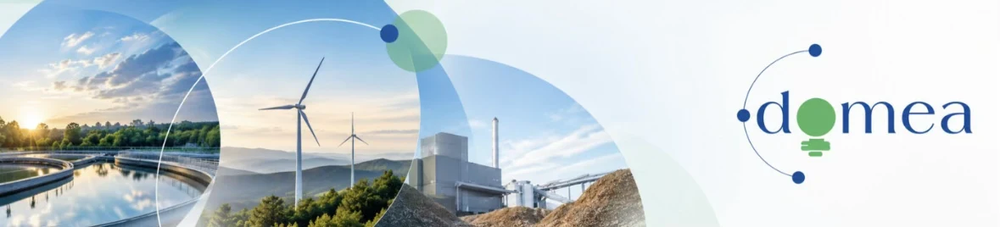
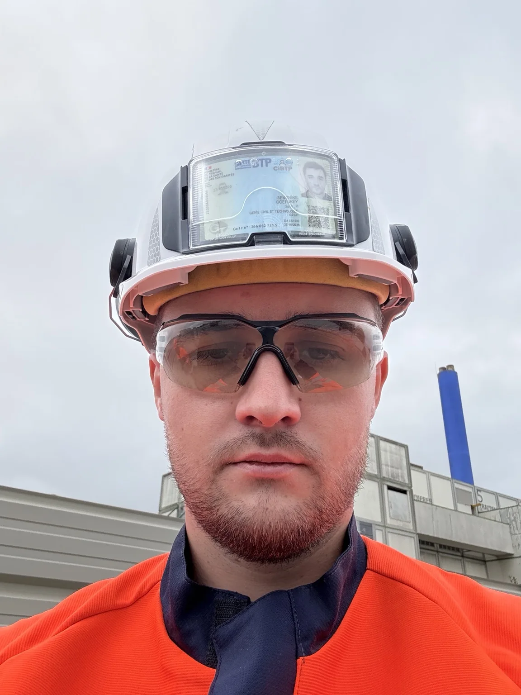

GÉNIE CIVIL · UVE NANTES
● Profil professionnelCarte de visite digitale
Geoffrey Sengiers
Superviseur Génie Civil
UVE Nantes · Génie civil & industrie
En mission chez PAPREC · via Domea
ICAM — Institut Catholique d’Arts et Métiers
Scannez pour ouvrir cette carte
Un clic suffit pour enregistrer mes coordonnées dans votre répertoire.
Mes réalisations
Projets et expériences en génie civil, industrie et environnement.
Projets à découvrir
Cette rubrique accueillera mes réalisations, photos de chantiers et descriptions de missions.
Les projets seront ajoutés après validation des informations et des autorisations de publication.
Mon CV
Retrouvez mon parcours, mes expériences et mes compétences.
Consulter / télécharger mon CV ↗Le CV sera disponible dès que le fichier PDF aura été ajouté au dépôt GitHub sous le nom cv-geoffrey-sengiers.pdf.